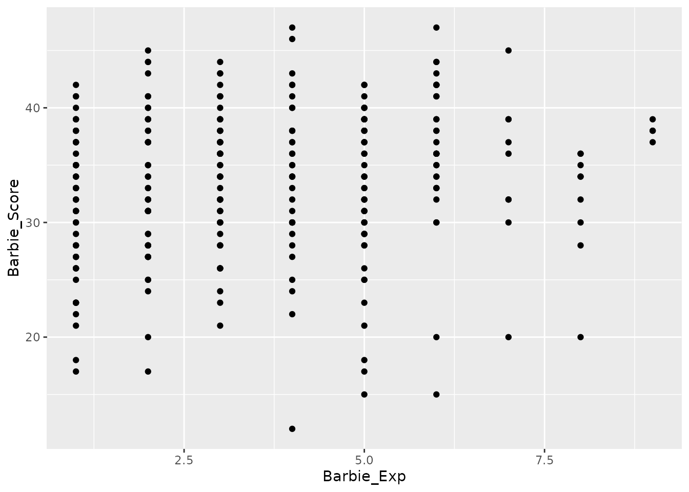
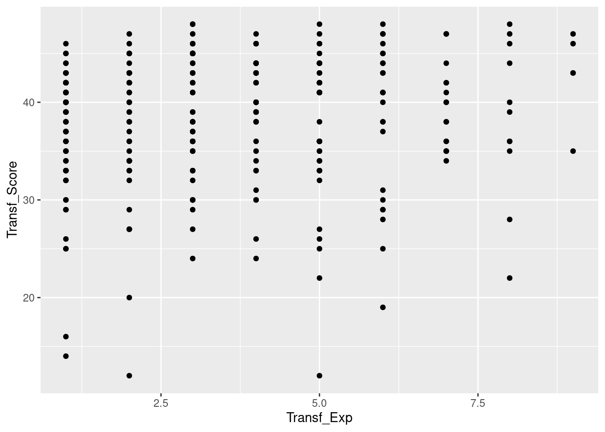
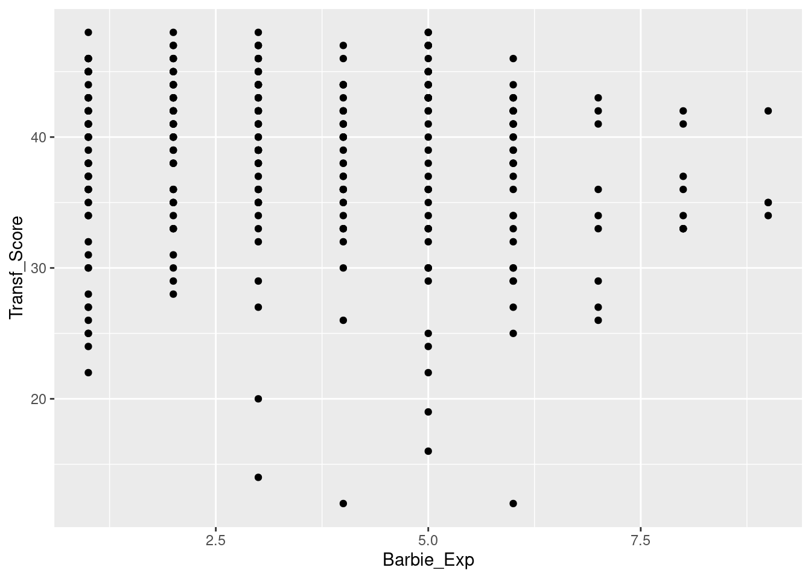

Lab 3 Scatterplots and correlation
So far, most of what we’ve done has been about describing measurements on one variable at a time. Today’s session will look at how we can explore relationships between variables. If there is a systematic relationship between two variables, they are said to be correlated.
The primary skills developed in this activity are a visual and a numerical way to explore relationships between variables:
- The visual way is called a scatterplot.
- The numerical way is the Pearson correlation coefficient.
Before we begin, make sure you have opened the tidyverse package from the library:
library(tidyverse)## ── Attaching packages ─────────────────────────────────────── tidyverse 1.3.0 ──## ✓ ggplot2 3.3.3 ✓ purrr 0.3.4
## ✓ tibble 3.0.5 ✓ dplyr 1.0.3
## ✓ tidyr 1.1.2 ✓ stringr 1.4.0
## ✓ readr 1.4.0 ✓ forcats 0.5.0## ── Conflicts ────────────────────────────────────────── tidyverse_conflicts() ──
## x dplyr::filter() masks stats::filter()
## x dplyr::lag() masks stats::lag()3.1 Calculating the Pearson correlation coefficient
We saw last time that one way R is useful is as a powerful calculator. Calculating things like standard deviations by hand is hard enough, but calculating the Pearson correlation coefficient requires doing that twice (once for each variable), in addition to a lot of other steps. R can help ease that burden.
3.1.1 From \(X\) to \(z\)
Recall that the Pearson correlation coefficient can be found using \(z\) scores. Specifically, if we have measurements on one variable—let’s call them \(X\)—and measurements on another variable—let’s call them \(Y\)—we can find the correlation by first finding the \(z\) scores for these two sets of measurements.
3.1.1.1 R can remember things
Let’s try doing that in R. Remember that R uses c() to say that everything within the parentheses is supposed to be treated as a collection of measurements on a single variable. Rather than having to write out that collection every time we want to use it, we can tell R to remember it. Let’s say we have a collection of measurements and we want to tell R to remember them with the label “X.” We can do that this way:
X <- c(10, 8, 13, 9, 11, 14, 6, 4, 12, 7, 5)The important thing to note in the line above is the arrow <-. The arrow tells R to take the stuff on the right and put it under the label on the left. You can think of the arrow as saying that the collection c(10, 8, 13, 9, 11, 14, 6, 4, 12, 7, 5) is now “inside” a box labeled X.
Now if we write “X” at the console and hit enter, R will remind us what we put inside the “X” box:
X## [1] 10 8 13 9 11 14 6 4 12 7 5We can also find a specific value using square brackets. For example, we can find the 3rd measurement this way:
X[3]## [1] 13Nice!23 This is just like how we used \(X_3\) as a shorthand for the 3rd measurement when we were doing things by hand.24
3.1.1.2 Using labeled collections
Now that R can remember that whole collection of measurements, we can use it to do calculations. For example, this will find the mean of all the numbers we put under the label “X”:
mean(X)## [1] 9And this will find the standard deviation:
sd(X)## [1] 3.316625Finally, we can combine different operations into a single line of code. The following will convert each of the measurements in X into \(z\) scores:
(X - mean(X)) / sd(X)## [1] 0.3015113 -0.3015113 1.2060454 0.0000000 0.6030227 1.5075567
## [7] -0.9045340 -1.5075567 0.9045340 -0.6030227 -1.2060454We can even tell R to remember those \(z\) scores like so:
z_X <- (X - mean(X)) / sd(X)Note that we gave these \(z\) scores a special label, “z_X,” so that we know they originally came from our collection labeled X. Now if we ask R to tell us what we put under the “z_X” label, we’ll get our \(z\) scores back
z_X## [1] 0.3015113 -0.3015113 1.2060454 0.0000000 0.6030227 1.5075567
## [7] -0.9045340 -1.5075567 0.9045340 -0.6030227 -1.20604543.1.2 Finding the correlation coefficient
3.1.2.1 Introducing a new set of measurements
Now that we’ve seen how to tell R to remember different collections of values, let’s add another variable to the mix and find its correlation with \(X\). We will call this variable \(Y\) to keep it distinct.
Y <- c(8.04, 6.95, 7.58, 8.81, 8.33, 9.96, 7.24, 4.26, 10.84, 4.82, 5.68)Let’s see what the mean of \(Y\) is25
## [1] 7.500909as well as its standard deviation26
## [1] 2.031568Finally, let’s find the \(z\) scores for each of our \(Y\) values and tell R to remember them with the label z_Y27.
If we’ve done our job right, we should get the following output when we ask R to remember what we put into z_Y:
z_Y## [1] 0.26535704 -0.27117431 0.03893097 0.64437460 0.40810391 1.21043979
## [7] -0.12842744 -1.59527462 1.64360272 -1.31962549 -0.896307173.1.2.2 Calculating correlation from \(z\) scores
To get the correlation coefficient between \(X\) and \(Y\) from our \(z\) scores, we need to multiply the \(z\) scores together, add them up, and divide by the number of values minus one. We can tell R to multiply together all our pairs of \(z\) scores like this
z_X * z_Y## [1] 0.08000816 0.08176213 0.04695251 0.00000000 0.24609592 1.82480664
## [7] 0.11616699 2.40496698 1.48669460 0.79576411 1.08098712We can add them up like this, by telling R to find the sum
sum(z_X * z_Y)## [1] 8.164205Finally, we need to divide by \(N - 1\). \(N\) in this case is 11, so \(N - 1 = 11 - 1 = 10\).
sum(z_X * z_Y) / 10## [1] 0.8164205And that’s the Pearson correlation coefficient!28
3.1.2.3 Calculating correlation directly
This is what you might call the “shaggy-dog” way of calculating the correlation, in that it takes a long time to get to the punchline. Fortunately, R gives us an even easier way! The correlation between \(X\) and \(Y\) can be found like this
cor(X, Y)## [1] 0.8164205cor tells R to find the correlation between the two sets of measurements labeled X and Y.
Remember that R knows what we mean by X and Y only because we already told R what they stood for. To get a sense of how that works, let’s replace our old Y with a new one:
Y <- c(1, 2, 3, 4, 5, 6, 7, 8, 9, 10, 11)Now if we ask for the correlation again, it will be different29
cor(X, Y)## [1] -0.42727273.1.3 Dealing with real data
The steps above are useful when you’ve got relatively few measurements that you can copy-and-paste into the R console. Real data is often more complicated, so let’s see how we can deal with it.
3.1.3.1 Get some data
First, we need to import some data into R using the code below.
anscombe <- read_csv("https://raw.githubusercontent.com/gregcox7/StatLabs/main/data/cor_data.csv")##
## ── Column specification ────────────────────────────────────────────────────────
## cols(
## Group = col_character(),
## X = col_double(),
## Y = col_double()
## )These data are artificial and were devised by Anscombe (1973) to illustrate the importance of not interpreting a correlation coefficient without visualizing your data.
3.1.3.2 Correlations for different sets of measurements
There are four groups of measurements in these data. The groups are labeled “A,” “B,” “C,” and “D.” Measurements are on two variables, labeled “X” and “Y.” Click on anscombe in the environment panel in RStudio (upper right) to take a look.
We can quickly find the correlation coefficient for each group of “X” and “Y” measurements30
anscombe %>%
group_by(Group) %>%
summarize(r = cor(X, Y))## # A tibble: 4 x 2
## Group r
## * <chr> <dbl>
## 1 A 0.816
## 2 B 0.816
## 3 C 0.816
## 4 D 0.817Notice that the correlation coefficients are almost all the same for each group. But now let’s try making some scatterplots to see if these correlations make sense.
3.2 Scatterplots
As we’ve seen, a scatterplot lets us see how measurements on two variables are related to one another. It does this with a bunch of dots “scattered” around the plot. Each dot represents a single individual or object. The horizontal position of the dot represents that individual’s observed value on one variable. The vertical position of the dot represents that same individual’s observed value on a different variable.
3.2.1 Making a group of scatterplots
R makes it easy not just to make a single scatterplot, but an entire group of them at once. The code below produces a set of scatterplots, one for each of the four groups, that puts the “X” measurements on the horizontal and the “Y” measurements on the vertical31:
anscombe %>%
ggplot(aes(x=X, y=Y)) +
geom_point() +
facet_wrap("Group")
Even though the correlation coefficient is the same for each group, the scatterplots all look very different!32
3.3 Some bigger data
Now that we’ve seen how to find correlation coefficients and make scatterplots, let’s apply these tools to some real data. These data come from a study by Ryan & Gauthier (2016), who studied differences in how well people can remember different kinds of objects. The point of this is to understand how we develop the ability to make fine visual distinctions between some things (e.g., between different peoples’ faces) but not others (e.g., leaves or snowflakes). They reasoned that the more experience someone has in dealing with a particular category of things, the better they’ll be at noticing and remembering the visual features that distinguish between members of that category.
Two of those categories were different types of toys: Barbies and Transformers. They measured how well their participants could tell apart pictures of Barbies that they had seen from pictures of Barbies they hadn’t seen. They did the same for pictures of Transformers. The final memory scores are a number correct out of 48. Finally, each participant indicated on a scale from 1 to 9 how much experience they had with each type of toy.
The question is, “is experience with a type of toy correlated with better memory?”
3.3.1 Import the data
To import the data into R, use the line below
toys <- read_csv("https://raw.githubusercontent.com/gregcox7/StatLabs/main/data/toys.csv")##
## ── Column specification ────────────────────────────────────────────────────────
## cols(
## Barbie_Score = col_double(),
## Transf_Score = col_double(),
## Barbie_Exp = col_double(),
## Transf_Exp = col_double()
## )Click on the new “toys” dataset in the Environment panel (upper right) to see what the data look like. “Barbie_Score” and “Transf_Score” are the scores on the two memory tests, one for Barbies and one for Transformers (respectively). “Barbie_Exp” and “Transf_Exp” are the two reports of prior experience with Barbies and Transformers, respectively.
3.3.2 Experience and memory for Barbies
Let’s first make a scatterplot showing Barbie experience on the horizontal axis and Barbie memory on the vertical axis. We can do that using this code:
toys %>%
ggplot(aes(x=Barbie_Exp, y=Barbie_Score)) +
geom_point()
This gives us a sense of what might be going on.33 Now let’s calculate the Pearson correlation coefficient (notice that there are no groups here, so we don’t need a group_by line)34:
toys %>%
summarize(r = cor(Barbie_Exp, Barbie_Score))## # A tibble: 1 x 1
## r
## <dbl>
## 1 0.1423.3.3 Experience and memory for Transformers
Now let’s do the same thing for Transformers. Here’s the scatterplot:35

And this is the correlation coefficient between Transformers Experience and Transformers memory score:36
toys %>%
summarize(r = cor(Transf_Exp, Transf_Score))## # A tibble: 1 x 1
## r
## <dbl>
## 1 0.0964It seems like the relationship between experience and memory is a bit weaker for Transformers than for Barbies. But there’s another interesting correlation here.
3.3.4 Experience with Barbies and memory for Transformers
Let’s see if there’s a relationship between experience with Barbies and memory for Transformers.
toys %>%
ggplot(aes(x=Barbie_Exp, y=Transf_Score)) +
geom_point()
The scatterplot is shown above and this gives the Pearson correlation coefficient:
toys %>%
summarize(r = cor(Barbie_Exp, Transf_Score))## # A tibble: 1 x 1
## r
## <dbl>
## 1 -0.124Interesting! Even though there is at best a weak relationship between Transformers experience and Transformers memory, there is actually a stronger relationship between Barbie experience and Transformers memory, just a negative one!37
3.4 Wrap-up
In today’s session, we saw how to find \(z\) scores and correlation coefficients in R. We also used R to make scatterplots and saw an example of why it is critical to look at a scatterplot before interpreting the correlation coefficient.
How would you get R to tell you what the first measurement was?↩︎
What do you think would happen if we asked for the 12th measurement? Try it and see! Hint: how many measurements do we have?↩︎
What code will find the mean of \(Y\)? Hint: how did we find the mean of \(X\)?↩︎
What code will find the standard deviation of \(Y\)? Hint: how did we find the standard deviation of \(X\)?↩︎
What code would you write to do this? Hint: what code did we use to calculate and remember the \(z\) scores for \(X\)?↩︎
Is the correlation positive or negative? Does it seem strong or weak?↩︎
Why do we get a different result from
cor(X, Y)even though the code itself is the same?↩︎Compare the code we used to find these correlations with the code we used last time to find the means of the different groups of rat lifespans. What is similar and what is different?↩︎
What do you think the function of the line
facet_wrap("Group")is in the code below?↩︎For each group, say whether you think the correlation coefficient provides a fair description of the relationship between the two variables. Why or why not?↩︎
Based on this scatterplot, does it seem like there might be a correlation between Barbie experience and visual memory for Barbies? If so, is it positive or negative? Weak or strong?↩︎
Do the sign and magnitude of the correlation coefficient make sense based on the scatterplot?↩︎
What code would produce this scatterplot? Hint: what code did we use to make the Barbie scatterplot? What variables in the dataset refer to Transformers rather than Barbies?↩︎
What code would find this correlation? Hint: what code did we use to find the Barbie correlation?↩︎
Can you think of any reasons why there might be a negative correlation between Barbie experience and Transformers memory?↩︎